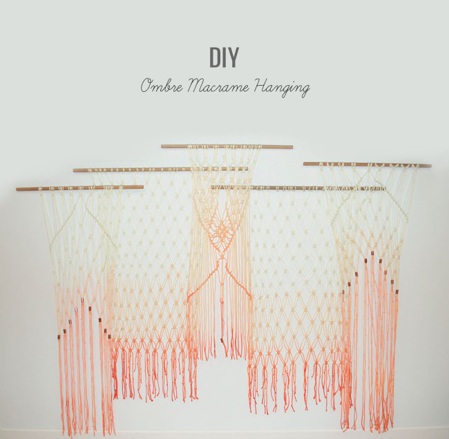
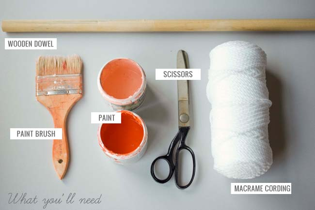
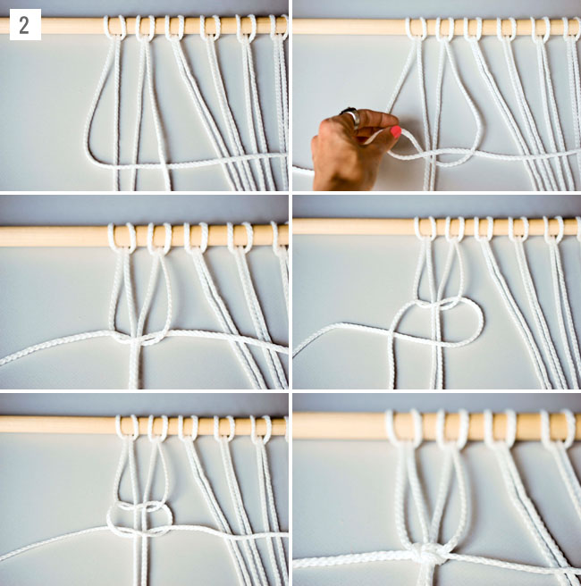
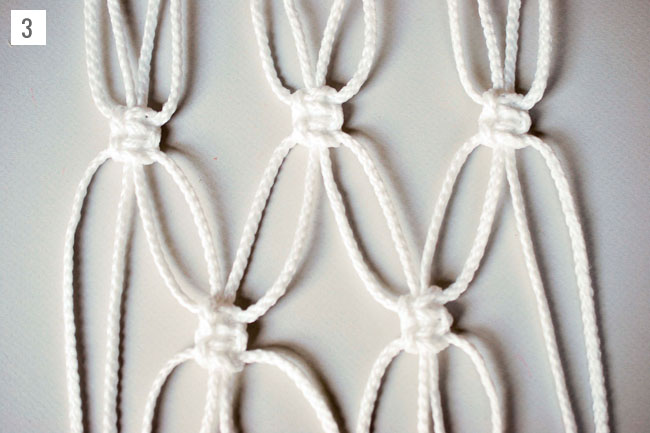
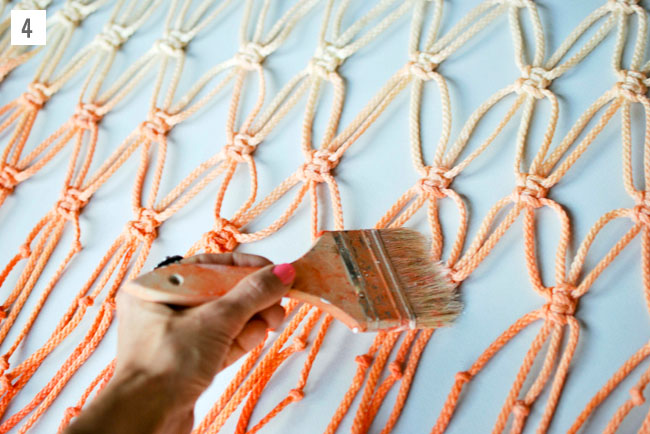
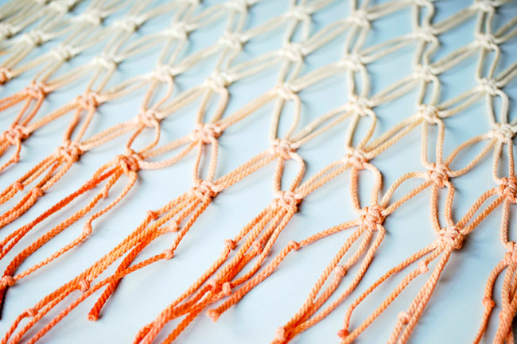
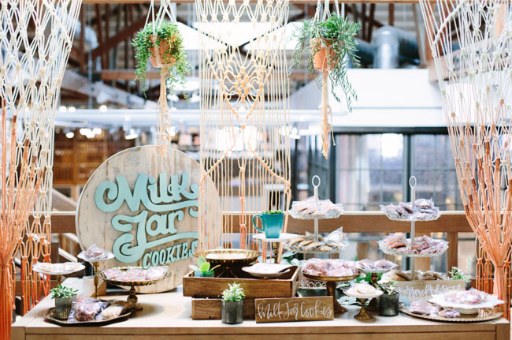

DIY Ombre Macrame Hanging
Well today we’re sharing how you can make your own at home, thanks to the designer Laura Stewart Design! These would look so perfect as a backdrop in the bedroom, living room, or boho decor for your wedding! Lots of ways to customize these, and although it looks complicated we can tell you its not! Let’s see how Laura made them…
What You’ll Need:
• Wooden dowels (i used 2- 42in dowels and 3- 36in dowels)
• Fabric scissors
• 100 yards macrame cording or cotton rope per 6ft long panel
• Water based paint
• Paint brush
*Prep: Cut 14 pieces of cording that are 20 feet long. Each piece will be folded in half and then knotted, so the length will decrease
Step 1: Fold a piece of cording in half and slide the loop end under the dowel. String the open ends of the cording through the loop and pull it tight to secure over the dowel. Repeat with each piece of cording, placing them about 2 inches apart until you reach the end of the dowel.
Step 2: Next we’ll be adding a row of square knots starting with the four cords on the far left. Using the cord on the far left (that’s the first cord on the left side of your project) lay it over the middle two creating a “four.” It should be perpendicular to the middle two pieces. Weave it under the cord on the far right. Then, take the cord on the far right and bring it under the two in the middle and through the loop on the left. Pull these gently. Now make the same knot again starting with the right cord to complete your square. Repeat that same square knot again so that you have 2 sets of square knots in total. Continue on to create a whole row of them!
Step 3: Next, add a second row of double-square knots starting two cords in from the edge to create more of a pattern. Then, add a third row of double-square knots using the same fabric strips as the first row. Continue this pattern until you reach your desired length.
Step 4: To create an ombre effect, paint the ends of your cording beginning with the lightest shade. Be generous with the water on your brush, this will make it easier to blend. Once you have covered about 2 feet of your cording in the light color, add the dark color on top starting at the bottom and working your way up. Blend the two colors together by using a wet brush until you get a nice gradient. Hang somewhere safe to dry (make sure to lay out a towel underneath to catch any drips) *Customize your backdrop by adding beads, brass pipe fittings, flowers, or feathers. . . the options are endless!
 
If you make your own ombre macrame hanging using these steps or supplies, we’d love to see how it turns out, so please share on Instagram along with the hashtag #GreenWeddingShoesDIY. We’ll regram our faves!